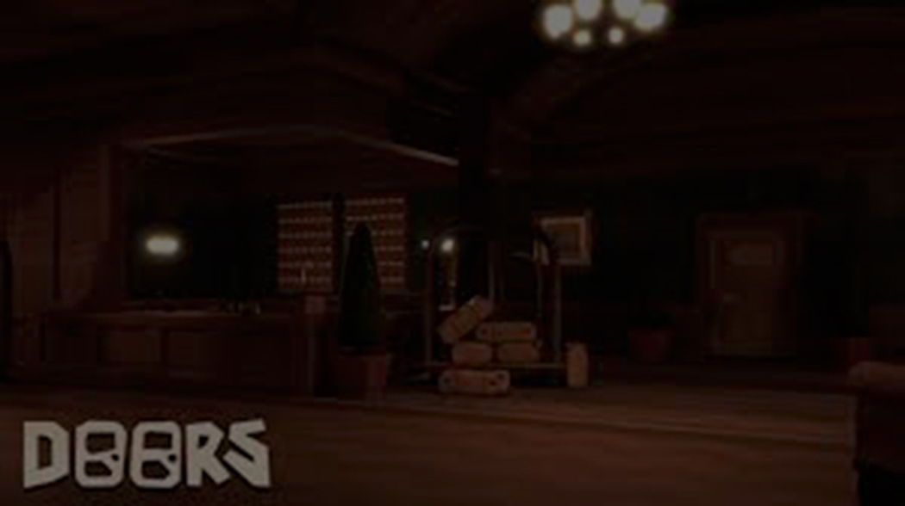
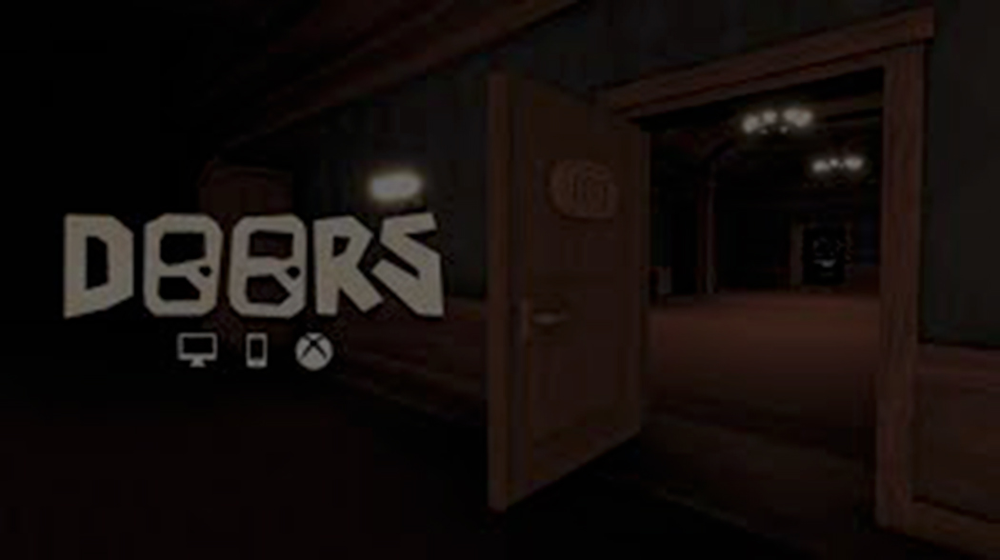
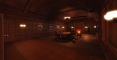
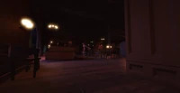
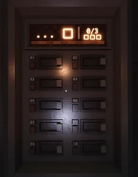

Introducao
DOORS é um jogo multiplayer de terror que foi inspirado tanto por Spooky's Jump Scare Mansion e nicorocks5555's Rooms, onde podemos ver diversas semelhanças tanto nas mecânicas quanto no estilo.

O Hotel é o primeiro andar em que o jogador poderá explorar durante o jogo. É um hotel genérico e antiquado, o qual é assombrado por várias criaturas que tentam te impedir de chegar na centésima porta.
Visao geral
No começo de cada run, jogadores podem comprar itens na loja pré-jogo com Maçanetas durante o tempo de espera do elevador. Se todos terminarem de comprar itens, os jogadores poderão pular a espera do elevador.
Jogadores terão que passar por várias salas geradas aleatoriamente, cada uma separada com portas enumeradas. Seu objetivo é chegar à porta 100, para então chegar ao elevador de mineração e escapar.
Criaturas
As criaturas são seres não-naturais que habitam o Hotel. Elas servem como obstáculos para impedir o progresso do jogador e geralmente tentam o matar usando quaisquer jeitos que possuem. Para saber mais sobre as criaturas clique aqui.
Puzzles
Sala de jantar
A Sala de Jantar é um lugar aleatoriamente gerado onde jogadores terão que trocar pinturas para combinar com o formato de cada enquadramento marcado com bordas azuis nas paredes, geradas pela Luz Guia. As ditas formas são retângulos horizontais e verticais, um quadrado e um oval. Quando todas as telas combinam com os respectivos moldes, a lareira irá descer com um clique, revelando a porta para a próxima sala.
O objetivo do jogador é pôr a pintura na tela marcada a combinar.
A Biblioteca ou livraria
A Biblioteca é um local pré-gerado em que jogadores terão que passar enquanto evitam Figure. Esta sempre é originada na sala 50. Nessa sala, jogadores devem encontrar livros localizados em estantes. Esses objetos estão sempre um pouco fora da posição em comparação à outros deles, então será mais fácil coletá-los. Além disso, eles vão emitir um som de zumbido constante quando um jogador chega perto de um deles. No lado esquerdo da Biblioteca, há uma mesa pedestal grande com gavetas. Nela, há um pedaço de papel revelando o código.
A entrada da Biblioteca possui duas grandes portas diferentes das normais. Ao entrarem, jogadores presenciarão uma sequência roteirizada com a primeira aparição de Figure na run, onde ele irá aparecer no lado esquerdo do local.
O objetivo do jogador na Biblioteca é adquirir o papel de solução do código e cinco a oito livros os quais os auxiliarão em escapar a sala. Com a ordem da senha e formas incluindo números, a porta de saída da biblioteca poderá ser desbloqueada. Os jogadores restantes que demorarem muito para sair do local serão inevitavelmente mortos por Figure.
O dijuntor de energia
O Disjuntor de Circuito é um puzzle o qual deve ser resolvido antes de ir ao elevador e descer ao Andar 2. Este sempre será gerado na sala 100, a Sala de Eletricidade.
O Disjuntor de Circuito possui 10 alavancas que os jogadores podem interagir, mas elas estão desaparecidas e espalhadas em vários cantos da sala. O jogador precisará achar todas elas. Após isso, é necessário achar a Chave da Sala de Eletricidade e destrancar o quarto onde a caixa elétrica estará presente. Então, é necessário pôr todas as alavancas nela, o que mostrará uma cena onde Figure pisará em um cabo em uma poça de água. Isso começará um incêndio, e a criatura pulará pela janela. Após isso, o monitor do disjuntor mostrará quais as alavancas que devem ser ativadas ou desativadas.
A barra se preenche por 10% a cada alavanca ativada corretamente, dependendo no que o monitor mostrou. Quando esta se encher, as alavancas vão ser redefinidas, e outro conjunto de combinações será mostrado. Isso vai repetir até que o jogador faça três barras completas, resultando no disjuntor ligando, e dando poder ao elevador. Assim, Figure sairá de uma sala atrás do jogador, e este deve correr o mais rápido possível até chegar ao elator.
